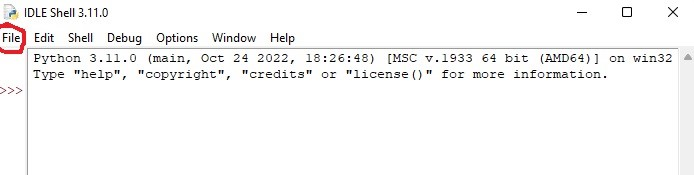

Итак, для того, чтобы написать нашу первую программу нам понадобится интерпретатор, который можно скачать здесь
Для того, чтобы в этой программе хотя бы чуть-чуть разобраться мы и напишем
всеми известное 'Hello world'. Для начала откроем 'file'

Затем там же мы открываем 'New file' и в появившемся окне пишем: print('Hello world').
После чего нашимаем на 'Run' и появляется вот это:
В данном случае мы воспользовались функцией 'print', которая является, что логично, функцией вывода данных.
Здесь же мы взяли и вывели 'hello world', то бишь строку, то есть 'str', а это, забегая
немного вперед, является типом данных. Типом данных является не только 'str', но и 'int'(целые числа),
'float'(вещественные, то есть числа с плавающей точкой - 0.3, 143.4 и т.д),
а также 'bool'(логический тип данных - 'True' и 'False'). Все эти наименования
понадобятся нам в будущем, а пока мы с ними просто немного ознакомились.
Арифметические операции с помощью функции 'print'
Вообще помимо всего прочего, а также и 'hello world' в функции 'print' можно использовать не только вывод
одной лишь строки, но и какие-нибудь арифметические операции, такие как: деление (A/B),
умножение (A*B), сложение (A+B), вычитание (A-B), степень числа (A**B), деление нацело (A//B),
остаток от деления (A%B).
Предлагаю подробнее разобрать деление нацело и остаток от деления. Деление нацело представляет собой практически тоже самое, что
и деление, однако оно действует по иному: возьмем 33 и поделим нацело на 4.
Разумеется, будь это обычное деление, то мне бы выдало 8.25, однако здесь так не работает, а соответственно мне выдаст просто 8.
Почему так? Все просто: это деление нацело, то есть в нем совершенно неважно наличие остатка.
Теперь предлагаю рассмотреть остаток от деления.
Данная операция являет собой совершенно противоположное предыдущему, а это значит, что
мы будем рассматривать уже не целое число, а именно что остаток. В данном случае
ответ будет 1. Почему так? Все просто. Число 12 делится на 4 и находится намного ближе к числу
13 и из этого выходит остаток 1. Если же провести данную процедуру с числом 15, то остаток будет 3. Ну
а если же с 16, то будет 0, ибо оно делится на 4 без особых проблем.
Каков вывод? С помощью 'print' можно без особых проблем выполнять различные математические операции, а также
без особых проблем выводить какие-нибудь строки по типу 'hello world'